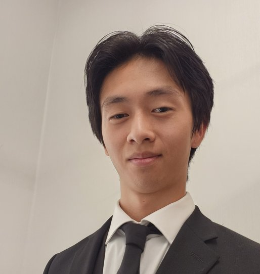

HCDE · University of Washington
Hi, I'm Ryan
I'm an undergraduate Human Centered Design & Engineering student who enjoys the user research and development experience, and turns what I learn into design recommendations.
Work
Four projects from my coursework, each covering the process from start to finish: research questions, methods, findings and recommendations.
How can students feel safe stepping away from their belongings in UW study spaces?
A quarter-long, three-method study across four campus buildings. I found that students' sense of safety depends more on who is around them than on any security measure, and that students don't just fear theft, they also fear losing their seat.
Read case studyWhy don't students use the campus safety services built for them?
We interviewed students about getting home late at night. The gap turned out not to be missing services but awareness, trust and fear of getting in trouble. From the interviews I helped build two evidence-backed personas and a journey map.
Read case studyA web app that turns government vehicle data into clear, comparable scores.
I designed and built a Flask app that pulls data from three NHTSA and EPA APIs and turns it into simple Reliability and Fuel Economy scores, so car buyers don't have to dig through reviews and spec sheets.
Read case studyA floating instrument that watches surface bubbles to estimate dissolved oxygen.
I designed the electronics housing in CAD for a team that built and deployed a sensor in Puget Sound.
Read case studyAbout
My name is Ryan Lee, born and raised in Seattle, and I started out studying Oceanography at the University of Washington. In summer 2025, I collected marine biological data at Highline College's MaST Center using standardized quantitative data procedures. Then, I made a switch into Human-Centered Design and Engineering. I still bring that field-science methodology into my user research, now applied to the human side of science.
I'm interested in user research on accessibility, entertainment, automotive, and health. I want to give people more autonomy in those areas by studying how they learn new systems, where they get stuck and what makes the experience feel good.

Education
- B.S. Human Centered Design & Engineering, University of Washington, expected June 2028
- A.A. Arts & Sciences, Bellevue College, 2024
Methods
- Field observation
- Semi-structured interviews
- Surveys
- Qualitative coding
- Affinity diagramming
- Personas & journey maps
Tools
- Figma / FigJam
- Onshape (CAD)
- ATLAS.ti
- Tableau
- Excel
- Python
- Flask
- Google Forms
- Claude Code